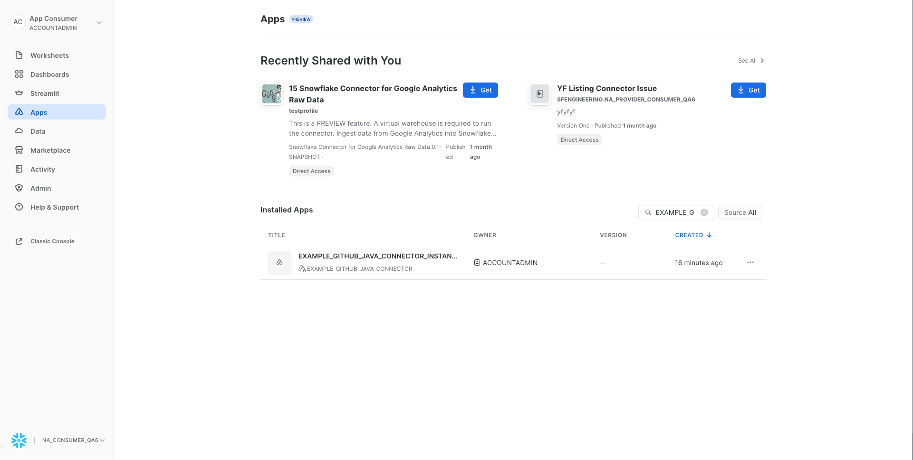
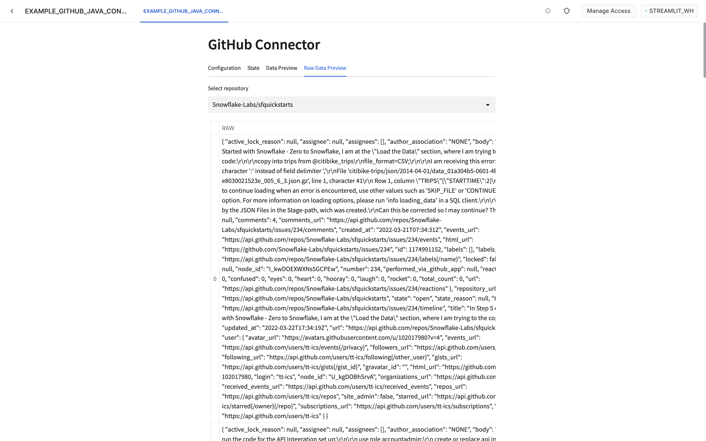

In this tutorial you will learn how to build native Snowflake connectors. This example uses GitHub issues API as the source of the data. In the next steps we will cover what constitutes a connector, how to build and deploy it and how to build an application UI using Streamlit.
- Basic knowledge of Snowflake Native Apps
- Basic knowledge of Java
- Snowflake user with
accountadminrole - GitHub account with access token
- macOS or Linux machine to build a project and run deployment scripts
- How to build a native connector
- How to achieve external connectivity
- How to use secrets
- Install Java 11
- Install snowsql
- Configure snowsql to allow using variables (
variable_substitution = True) - Configure snowsql to exit on first error (
exit_on_error = True) - Clone the connectors-native-sdk repository and go to
./examples/example-github-java-connector
The native connector is built using only Snowflake primitives. The business logic is written in Java using Snowpark library and encapsulated in stored procedures. The procedures constitute the interface of the connector.
To facilitate recurring ingestion of the resources the connector uses task on configurable schedule.
The connector consists of the following elements:
- schemas
PUBLIC- versioned, used to store all the public proceduresSTATE- stateful, used for all the stateful objects like tablesTASKS- stateful, used for the tasks
- tables
STATE.APP_CONFIGURATION- application configuration (details will be covered in next steps)STATE.RESOURCE_CONFIGURATION- resource configuration (details will be covered in next steps)STATE.APP_STATE- application state (details will be covered in next steps)
- procedures
PUBLIC.PROVISION_CONNECTOR- configures the connectorPUBLIC.ENABLE_RESOURCE- enables a repository for the ingestionPUBLIC.INGEST_DATA- used by the tasks running the ingestion
Only selected objects will be visible to customer who installed the app. See: docs.
Let's take a look at the structure of this connector.
├── Makefile
├── README.md
├── example-github-connector-java-module
│ ├── build.gradle
│ └── src
│ ├── main
│ └── test
├── integration-test
├── java-module
├── manifest.yml
├── scripts
├── setup.sql
├── sf_build.sh
└── streamlit_app.py
Example Java module
The example-github-connector-java-module/src/main is a Java program containing all the execution logic of the connector. This program is separated into four modules:
apia package that contains definitions of all the user facing proceduresapplicationa package that includes the application constantscommona package that includes reusable elementsingestiona package that contains the ingestion logic (external connectivity with GitHub)
Integration tests
Basic example of application workflow containing building, deploying and installing application on test environment.
Streamlit dashboard
Additionally, the connector has a UI build in Streamlit. The Streamlit dashboard is defined in streamlit_app.py file. Thanks to it the connector can be configured and monitored using Streamlit in Snowflake. Additionally, some privileges required by the application can be requested through a pop-up in Streamlit.
setup.sql script
Setup script defines objects which are created and needed inside the application. This includes procedures, schemas, tables etc.
manifest.yml file
Manifest file is required by the Native Apps framework. This file specifies properties of an application. Privileges and references required by the application can be specified inside the manifest file. For more information check manifest docs and requesting privileges docs.
The connector configuration is split into two domains:
- connector level configuration
- resource level configuration
Configuring connector
Connector level configuration lives in the STATE.APP_CONFIGURATION table. This table is meant to keep information like API integration name used by the connector and secret name used for authentication in GitHub.
The table is a key-value table.
Ingestion resource configuration
Next to the global configuration the connector also stores a configuration for every enabled resource. In case of this example a single resource is represented as org_name/repo_name.
The table is a key-value table.
Apart from configuration table, the connector uses STATE.APP_STATE table to persist a state of any ongoing ingestion.
The state table is a key-value table with an additional timestamp column. To improve the performance the table is an append only table. This means that creating or updating a value inserts a new row into the table. Reading a key is done by retrieving the newest row with the given key.
Data from GitHub is ingested using external access capabilities of Snowflake.
Direct external access
Direct external access is a public preview feature of Snowflake.
Example application logs various operations during runtime. By default, those logs are not stored anywhere. To enable log storing please refer to enable loging documentation.
When a repository is enabled the following objects are created:
- a sink table for raw data ingested from GitHub API
- a view over sink table that flattens the raw JSON data
- a task responsible for ingestion
The task runs every 30 minutes and every repository has a dedicated task.
The ingestion task calls INGEST_DATA procedure which does the following:
- reads the GitHub Token from secret
- sends a request to GitHub issues API with authorization headers
- merges fetched data into sink table
- checks for a next page link in the response headers
- if the link is present it repeats the steps from 2 onward
- if the link is not present the procedure exits
In this approach all the data for a given repository is fetched every time. The data is merged, meaning that the new records are added, while the changed records are updated in the sink table.
As we have learnt in previous sections the project consists of the three main components:
- code module
- manifest.yml
- setup.sql
All of those components have to be uploaded to Snowflake prior to creating the app.
Overview
Build step for the app consist of:
- Creating jar artifact
- Creating a new
sf_builddirectory on the local machine - Copying of the
jar fileto thesf_buildfolder - Copying of the
manifest.ymlto thesf_buildfolder - Copying of the
install.sqlto thesf_buildfolder - Copying of the
streamlit_app.pyto thesf_buildfolder
The sf_build directory serves as the source of truth about the app definition and its content.
Building
To build the connector execute a convenience script:
make build
Once the sf_build folder is created you can follow to the next step where we will deploy the connector.
In this step we will deploy the connector to a Snowflake account.
Overview
Deployment step consists of:
- Creating a database and stage for app artifacts
- Uploading the
sf_buildcontents to the newly created stage - Creating an application package using the data from the stage
Connection and app setup
This quickstart uses some convenience scripts for running necessary commands. Those scripts use snowsql. Before proceeding you need to configure snowsql connection to your Snowflake account.
- Configure snowsql connection according to the documentation.
- Export the name of your connection in the terminal
export CONNECTION= - Adjust values for APP_NAME, APP_VERSION, STAGE_DB, STAGE_NAME, WAREHOUSE in the
Makefilescript. Those values will be used by all the scripts used in this quickstart.
Deploy the app
To deploy the connector execute a convenience script:
make deploy
Now an application package should be created on your account, and you can follow to the next step where you will create a new instance of the connector.
In this step you will install the connector. The installation is encapsulated in a convenience script.
Creating external access integration and secrets
In order to access external resources the connector requires 3 objects to be configured:
The script will run commands like the following ones to bootstrap all necessary objects:
CREATE DATABASE GITHUB_SECRETS;
CREATE OR REPLACE NETWORK RULE GH_RULE
MODE = EGRESS
TYPE = HOST_PORT
VALUE_LIST=('api.github.com:443');
CREATE OR REPLACE SECRET $SECRET_NAME TYPE=GENERIC_STRING SECRET_STRING='< PASTE API TOKEN >';
SET CREATE_INTEGRATION = 'CREATE OR REPLACE EXTERNAL ACCESS INTEGRATION ' || $INTEGRATION_NAME || '
ALLOWED_NETWORK_RULES = (GH_RULE)
ALLOWED_AUTHENTICATION_SECRETS = (''' || $SECRET_NAME || ''')
ENABLED = TRUE';
Granting privileges to the application
The script will grant some of the required privileges to the application. The rest of the privileges will be requested later through the Streamlit pop-up. The application requires the following privileges:
- usage on the external access integration you created in the previous step
- usage on the database and the schema with the secrets
- read on the secret itself
This translates to queries like those:
GRANT USAGE ON INTEGRATION IDENTIFIER($INTEGRATION_NAME) TO APPLICATION IDENTIFIER($APP_INSTANCE_NAME);
GRANT USAGE ON DATABASE IDENTIFIER($SECRETS_DB) TO APPLICATION IDENTIFIER($APP_INSTANCE_NAME);
GRANT USAGE ON SCHEMA IDENTIFIER($SECRETS_SCHEMA) TO APPLICATION IDENTIFIER($APP_INSTANCE_NAME);
GRANT READ ON SECRET IDENTIFIER($SECRET_NAME) TO APPLICATION IDENTIFIER($APP_INSTANCE_NAME);
The following privileges will be granted using pop-ups inside Streamlit:
create databaseto create destination databaseexecute taskto create and run ingestion tasksusage on warehousethat will be used by the connector
Running the installation script
To install the connector using the convenience script run the following:
export GITHUB_TOKEN=<your secret token>
make install
To start the data ingestion you need to configure the connector. To do this go to the Apps tab inside Snowflake and select your connector.

Grant privileges
When your connector is loaded by Streamlit a pop-up will be displayed. It will always be displayed at the start of the application, as long as any of the privileges are missing.

Currently, there is a bug related to granting privileges. After granting privileges we need to refresh the web page in the browser to make them visible. If we skip that, we will see an error during enabling ingestion, saying that we don't have permission to run tasks.
After granting privileges - refresh the page.
Warehouse privilege
After granting privileges another pop-up will be displayed. It requires the user to choose a warehouse that will be used to schedule the ingestion task. Granting this privilege is necessary for the connector to work properly.

After granting warehouse privilege - refresh the page.
Configure the connector
First you need to specify what database should be used for storing the ingested data. This database will be created, it should have a name that is not used by any other database. Furthermore, a secret and integration that should be used by the connector need to be specified. Use names of the objects you created previously. Names of the objects will be visible in the execution log of the convenience scripts run in the previous steps. By default, created values are the following:
- Secret name:
{APP_NAME}_SECRETS.PUBLIC.GITHUB_TOKEN> - Integration name:
{APP_NAME}_INTEGRATION
Please note that the grey values visible in the form are just tooltips and are not used as the default values.

Enable data ingestion
Next you can enable a repository for ingestion. You can try Snowflake-Labs/sfquickstarts. Put Snowflake-Labs as an organization name and sfquickstarts as a repository name in the form marked red in the below picture. Once Start ingestion button is pressed a task will be scheduled and the ingestion will start. Configured repository will be visible in the table below the form. More than one repository can be configured.

Monitor the ingestion
Once the ingestion is started you can monitor its state using state and data preview tabs. It might take some time before any data is visible. You may want to refresh the whole page if data does not appear in a minute or two. If multiple repositories were configured, the visible data can be changed using the selection box.

